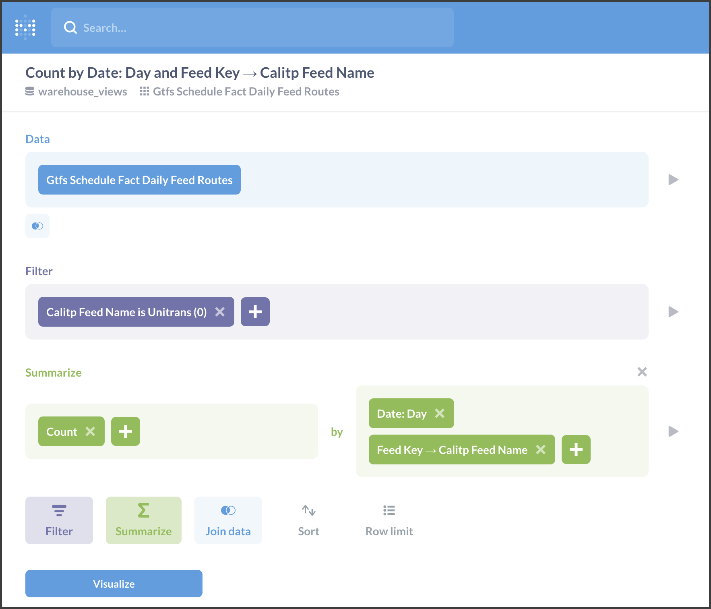
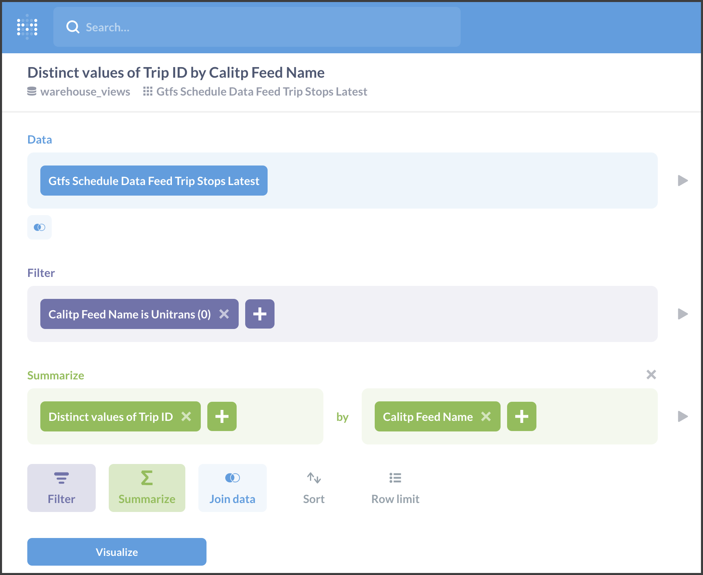

Tutorial - Querying the Data Warehouse (WIP)¶
Introduction¶
The following content represents a tutorial introduction to simple queries that can be made to the calitp data warehouse, and the methods that can be used to perform them.
Example Queries¶
The queries represented in the following tutorial are as follows:
Number of Routes for a Given Agency Over Time - observing a change in route numbers per agency across time
Number of Stops for a Given Agency Over Time
Number of Stops Made Across all Trips for an Agency
For a Given Agency, on Each Day, Days Until the Feed Expires
Max Number of Stops a Trip Can Have, Per Agency
Available Tools¶
The tools that we can use to answer them are:
SQL - Using the BigQuery Browser
Python
siuba - a convenient data analysis library in Python
calitp - a personalized package incorporating calitp’s unique needs
pandas - a useful data analysis library, used sparsely in the examples below
Metabase - our business insights visualization tool
Relevant Tables¶
Fact Tables¶
These tables contain measurements, metrics, and facts used to answer the questions from the following perspectives:
Feeds
views.gtfs_schedule_fact_daily_feeds
(Gtfs Schedule Fact Daily Feeds in Metabase)
Routes
views.gtfs_schedule_fact_daily_feed_routes
(Gtfs Schedule Fact Daily Feed Routes in Metabase)
Stops
views.gtfs_schedule_fact_daily_feed_stops
(Gtfs Schedule Fact Daily Feed Stops in Metabase)
Trips
views.gtfs_schedule_data_feed_trip_stops_latest
(Gtfs Schedule Data Feed Trip Stops Latest in Metabase)
Dimensional Tables¶
These tables compliment the fact tables by providing additional descriptive attributes:
views.gtfs_schedule_dim_feeds - joining with this table is the most common way to append calitp_feed_name (our primary agency identifier) to fact tables
(Gtfs Schedule Dim Feeds in Metabase)
Important Column Types and Columns¶
Agency
calitp_feed_name
(Calitp Feed Name in Metabase)
Our primary agency identifier
In most of the examples below, this is gathered from the table: views.gtfs_schedule_dim_feeds
(Gtfs Schedule Dim Feeds in Metabase)
Time
Geography
Query Examples¶
Importing Relevant Python Libraries
from calitp.tables import tbl
from myst_nb import glue
from calitp import query_sql
from siuba import *
import pandas as pd
import calitp.magics
pd.set_option("display.max_rows", 20)
1. Number of Routes for a Given Agency Over Time¶
SQL¶
Primary Fact Table → views.gtfs_schedule_fact_daily_feed_routes Secondary Table → views.gtfs_schedule_dim_feeds
Time → date (GROUP BY) Geography → route_key (the unique identifier for each record, to COUNT by) Agency → Join with table views.gtfs_schedule_dim_feeds on variable feed_key for calitp_feed_name (GROUP BY)
SELECT
calitp_feed_name,
date,
count(*) AS count_feeds
FROM `views.gtfs_schedule_fact_daily_feed_routes`
JOIN `views.gtfs_schedule_dim_feeds` USING (feed_key)
WHERE
calitp_feed_name = "Unitrans (0)"
GROUP BY
1, 2
ORDER BY
date DESC
LIMIT 10
| calitp_feed_name | date | count_feeds | |
|---|---|---|---|
| 0 | Unitrans (0) | 2021-11-08 | 18 |
| 1 | Unitrans (0) | 2021-11-07 | 18 |
| 2 | Unitrans (0) | 2021-11-06 | 18 |
| 3 | Unitrans (0) | 2021-11-05 | 18 |
| 4 | Unitrans (0) | 2021-11-04 | 18 |
| 5 | Unitrans (0) | 2021-11-03 | 18 |
| 6 | Unitrans (0) | 2021-11-02 | 18 |
| 7 | Unitrans (0) | 2021-11-01 | 18 |
| 8 | Unitrans (0) | 2021-10-31 | 18 |
| 9 | Unitrans (0) | 2021-10-30 | 18 |
Metabase¶
Example 1:¶
Secondary Table → Gtfs Schedule Dim Feeds¶
Time → Date (FILTER) Geography → Route Key (the unique identifier for each record, to COUNT by) Agency → Metabase automatically joins with table Gtfs Schedule Dim Feeds on variable Feed Key to get Calitp Feed Name (FILTER)

Siuba¶
Primary Fact Table → views.gtfs_schedule_fact_daily_feed_routes Secondary Table → views.gtfs_schedule_dim_feeds
Time → date (COUNT by) Geography → route_key (the unique identifier for each record) Agency → Join with table views.gtfs_schedule_dim_feeds on variable feed_key for calitp_feed_name (FILTER by)
# Join to get CalITP Feed Names
# Count routes by date and CalITP Feed Names, order by date, filter by specific calitp_feed_name
(
tbl.views.gtfs_schedule_fact_daily_feed_routes()
>> left_join(_, tbl.views.gtfs_schedule_dim_feeds(), "feed_key")
>> filter(_.calitp_feed_name == "Unitrans (0)")
>> count(_.date)
>> arrange(_.date)
)
# Source: lazy query # DB Conn: Engine(bigquery://cal-itp-data-infra/?maximum_bytes_billed=5000000000) # Preview:
| date | n | |
|---|---|---|
| 0 | 2021-04-15 | 20 |
| 1 | 2021-04-16 | 20 |
| 2 | 2021-04-17 | 20 |
| 3 | 2021-04-18 | 20 |
| 4 | 2021-04-19 | 20 |
# .. may have more rows
metabase¶
2. Number of Stops for a Given Agency Over Time¶
SQL¶
Primary Fact Table → views.gtfs_schedule_fact_daily_feed_stops Secondary Table → views.gtfs_schedule_dim_feeds
Time → date (GROUP BY) Geography → stop_key (the unique identifier for each record, to COUNT by) Agency → Join with table views.gtfs_schedule_dim_feeds on variable feed_key for calitp_feed_name (GROUP BY)
SELECT
calitp_feed_name,
date,
count(*) AS count_stops
FROM `views.gtfs_schedule_fact_daily_feed_stops`
JOIN `views.gtfs_schedule_dim_feeds` USING (feed_key)
WHERE
calitp_feed_name = "Unitrans (0)"
GROUP BY
1, 2
ORDER BY
date
LIMIT 10
| calitp_feed_name | date | count_stops | |
|---|---|---|---|
| 0 | Unitrans (0) | 2021-04-15 | 298 |
| 1 | Unitrans (0) | 2021-04-16 | 298 |
| 2 | Unitrans (0) | 2021-04-17 | 298 |
| 3 | Unitrans (0) | 2021-04-18 | 298 |
| 4 | Unitrans (0) | 2021-04-19 | 298 |
| 5 | Unitrans (0) | 2021-04-20 | 298 |
| 6 | Unitrans (0) | 2021-04-21 | 298 |
| 7 | Unitrans (0) | 2021-04-22 | 298 |
| 8 | Unitrans (0) | 2021-04-23 | 298 |
| 9 | Unitrans (0) | 2021-04-24 | 298 |
Metabase¶
Primary Fact Table → Gtfs Schedule Fact Daily Feed Stops Secondary Table → Gtfs Schedule Dim Feeds
Time → Date (COUNT by) Geography → Stop Key (the unique identifier for each record, to COUNT by) Agency → Metabase automatically joins with table Gtfs Schedule Dim Feeds on variable Feed Key to get Calitp Feed Name (FILTER by)

Siuba¶
Primary Fact Table → views.gtfs_schedule_fact_daily_feed_stops Secondary Table → views.gtfs_schedule_dim_feeds
Time → date (GROUP BY) Geography → stop_key (the unique identifier for each record, to COUNT by) Agency → Join with table views.gtfs_schedule_dim_feeds on variable feed_key for calitp_feed_name (GROUP BY)
## Join to get CalITP Feed Names
## Count stops by date and CalITP Feed Names, order by date, filter by specific calitp_feed_name
(
tbl.views.gtfs_schedule_fact_daily_feed_stops()
>> left_join(_, tbl.views.gtfs_schedule_dim_feeds(), "feed_key")
>> count(_.date, _.calitp_feed_name)
>> filter(_.calitp_feed_name == "Unitrans (0)")
>> arrange(_.date)
)
# Source: lazy query # DB Conn: Engine(bigquery://cal-itp-data-infra/?maximum_bytes_billed=5000000000) # Preview:
| date | calitp_feed_name | n | |
|---|---|---|---|
| 0 | 2021-04-15 | Unitrans (0) | 298 |
| 1 | 2021-04-16 | Unitrans (0) | 298 |
| 2 | 2021-04-17 | Unitrans (0) | 298 |
| 3 | 2021-04-18 | Unitrans (0) | 298 |
| 4 | 2021-04-19 | Unitrans (0) | 298 |
# .. may have more rows
3. Number of Stops Made Across all Trips for an Agency¶
SQL¶
Primary Fact Table → views.gtfs_schedule_data_feed_trip_stops_latest
Time → no variable - this table only has information for the current day Geography → stop_time_key (the unique identifier for each record, to COUNT by) Agency → calitp_feed_name (GROUP BY)
SELECT
calitp_feed_name,
count(*) AS n_trip_stops,
count(distinct(trip_id)) AS n_trips,
count(distinct(stop_id)) AS n_stops
FROM `views.gtfs_schedule_data_feed_trip_stops_latest`
WHERE
calitp_feed_name = "Unitrans (0)"
GROUP BY
calitp_feed_name
| calitp_feed_name | n_trip_stops | n_trips | n_stops | |
|---|---|---|---|---|
| 0 | Unitrans (0) | 33400 | 2354 | 275 |
Metabase¶
Primary Fact Table → Gtfs Schedule Data Feed Trip Stops Latest Secondary Table → Gtfs Schedule Dim Feeds
Time → no variable - this table only has information for the current day Geography → Stop Time Key (the unique identifier for each record, to COUNT by) Agency → Metabase automatically joins with table Gtfs Schedule Dim Feeds on variable Feed Key to get Calitp Feed Name (FILTER by)
Count of Trip Stops Made Across all Trips for an Agency

Distinct Trips in Trip Stops

Distinct Stops in Trip Stops

Siuba¶
Primary Fact Table → views.gtfs_schedule_data_feed_trip_stops_latest
Time → no variable - this table only has information for the current day Geography → stop_time_key (the unique identifier for each record, to COUNT by) Agency → calitp_feed_name (GROUP BY)
(
tbl.views.gtfs_schedule_data_feed_trip_stops_latest()
>> filter(_.calitp_feed_name == "Unitrans (0)")
>> summarize(
n_trips=_.trip_id.nunique(), n_stops=_.stop_id.nunique(), n=_.trip_id.size()
)
)
# Source: lazy query # DB Conn: Engine(bigquery://cal-itp-data-infra/?maximum_bytes_billed=5000000000) # Preview:
| n_trips | n_stops | n | |
|---|---|---|---|
| 0 | 2354 | 275 | 33400 |
# .. may have more rows
4. For a Given Agency, on Each Day, Days Until the Feed Expires¶
SQL¶
Primary Fact Table → views.gtfs_schedule_fact_daily_feeds Secondary Table → views.gtfs_schedule_dim_feeds
Time → date, feed_end_date Measure → days_until_feed_end_date Agency → Join with table views.gtfs_schedule_dim_feeds on variable feed_key for calitp_feed_name (GROUP BY)
SELECT
calitp_feed_name,
date,
days_until_feed_end_date,
feed_end_date
FROM views.gtfs_schedule_fact_daily_feeds
JOIN views.gtfs_schedule_dim_feeds USING (feed_key)
WHERE
date = "2021-09-01" AND calitp_feed_name = "Unitrans (0)"
| calitp_feed_name | date | days_until_feed_end_date | feed_end_date | |
|---|---|---|---|---|
| 0 | Unitrans (0) | 2021-09-01 | 20 | 2021-09-21 |
Metabase¶
Primary Fact Table → Gtfs Schedule Fact Daily Feeds Secondary Table → Join: Gtfs Schedule Dim Feeds
Time → Date, Feed End Date Measure → Days Until Feed End Date Agency → Join with table Gtfs Schedule Dim Feeds on variable feed_key for Calitp Feed Name (FILTER by) and Feed End Date
Columns to Select:
Gtfs Schedule Fact Daily Feeds
Date
Days Until Feed End Date
Gtfs Schedule Dim Feeds
Calitp Feed Name
Feed End Date

Siuba¶
Primary Fact Table → views.gtfs_schedule_fact_daily_feeds Secondary Table → views.gtfs_schedule_dim_feeds
Time → date (FILTER by), feed_end_date Measure → days_until_feed_end_date Agency → Join with table views.gtfs_schedule_dim_feeds on variable feed_key for calitp_feed_name (FILTER by)
(
tbl.views.gtfs_schedule_fact_daily_feeds()
>> left_join(_, tbl.views.gtfs_schedule_dim_feeds(), "feed_key")
>> select(_.calitp_feed_name, _.date, _.days_until_feed_end_date, _.feed_end_date)
>> filter(_.date == "2021-09-01", _.calitp_feed_name == "Unitrans (0)")
)
# Source: lazy query # DB Conn: Engine(bigquery://cal-itp-data-infra/?maximum_bytes_billed=5000000000) # Preview:
| calitp_feed_name | date | days_until_feed_end_date | feed_end_date | |
|---|---|---|---|---|
| 0 | Unitrans (0) | 2021-09-01 | 20 | 2021-09-21 |
# .. may have more rows
5. Max Number of Stops a Trip Can Have, Per Agency¶
SQL¶
Primary Fact Table → views.gtfs_schedule_data_feed_trip_stops_latest Secondary Table → views.gtfs_schedule_dim_feeds
Time → no variable, finding max across all days Geography → trip_id (the unique identifier for each record, to GROUP BY) Agency → Join with table views.gtfs_schedule_dim_feeds on variable feed_key for calitp_feed_name (GROUP BY)
WITH
counting_stop_times AS (
-- count the number of stops each trip in each feed makes
SELECT
trip_id,
calitp_feed_name,
COUNT(*) AS n_trip_stop_times
FROM `views.gtfs_schedule_data_feed_trip_stops_latest`
GROUP BY
1, 2
)
-- calculate the max number of stops made by a feed's trip
-- we filter to keep only the Unitrans feed for this example
SELECT
calitp_feed_name,
MAX(n_trip_stop_times) AS max_n_trip_stop_times
FROM
counting_stop_times
WHERE
calitp_feed_name = "Unitrans (0)"
GROUP BY
calitp_feed_name
| calitp_feed_name | max_n_trip_stop_times | |
|---|---|---|
| 0 | Unitrans (0) | 43 |
Metabase¶
Primary Fact Table → Gtfs Schedule Data Feed Trip Stops Latest Secondary Table → Gtfs Schedule Dim Feeds
Time → no variable, finding max across all days Geography → Trip ID (the unique identifier for each record, to COUNT by) Agency → Metabase automatically joins with table Gtfs Schedule Dim Feeds on variable Feed Key to get Calitp Feed Name (COUNT by)

Siuba¶
Primary Fact Table → views.gtfs_schedule_data_feed_trip_stops_latest Secondary Table → views.gtfs_schedule_dim_feeds
Time → no variable, finding max across all days Geography → trip_id (the unique identifier for each record, to GROUP BY) Agency → Join with table views.gtfs_schedule_dim_feeds on variable feed_key for calitp_feed_name (GROUP BY)
(
tbl.views.gtfs_schedule_data_feed_trip_stops_latest()
>> count(_.trip_id, _.calitp_feed_name)
>> filter(_.calitp_feed_name == "Unitrans (0)")
>> summarize(n_max=_.n.max())
)
# Source: lazy query # DB Conn: Engine(bigquery://cal-itp-data-infra/?maximum_bytes_billed=5000000000) # Preview:
| n_max | |
|---|---|
| 0 | 43 |
# .. may have more rows